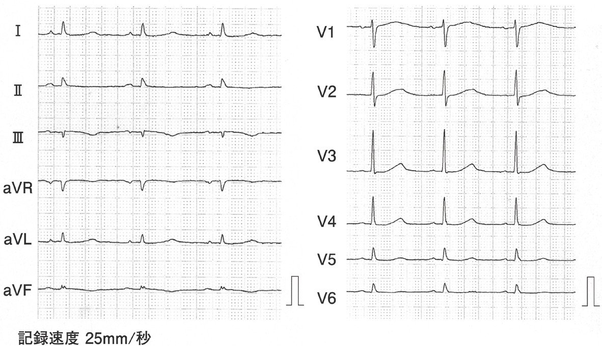
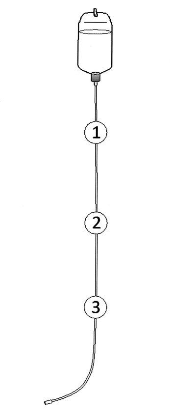
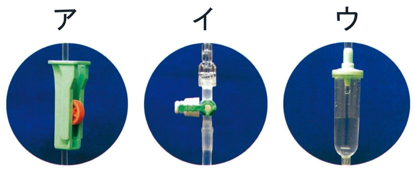
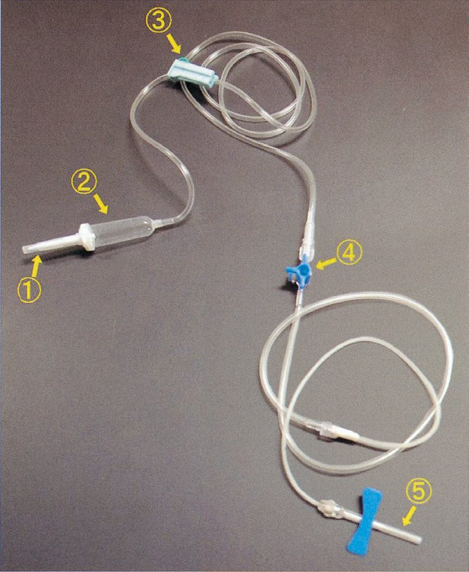

| 病態 | AG | 機序 |
| ａ 下痢 | 正常AG | 腸液（HCO₃⁻含む）喪失 |
| ｂ DKA | AG開大 | ケトン体（βヒドロキシ酪酸）蓄積 |
| ｃ 乳酸アシドーシス | AG開大 | 乳酸蓄積（ショック・低酸素・メトホルミン） |
| ｄ 尿細管性アシドーシス（RTA） | 正常AG | 尿細管でのHCO₃⁻再吸収障害or H⁺排泄障害 |
| ｅ 尿毒症 | AG開大 | 有機酸（尿酸・硫酸・リン酸等）蓄積 |
| 年齢 | 体液量/体重 | 細胞外液 | 細胞内液 |
| 新生児 | 約75〜80% | 約45%（最大） | 約35% |
| 乳児（1歳） | 約70% | 約25% | 約45% |
| 幼児（2〜5歳） | 約65% | 約25% | 約40% |
| 学童 | 約60% | 約20% | 約40% |
| 成人男性 | 約60% | 約20% | 約40% |
| 成人女性 | 約55% | 約20% | 約35% |
| 病態・薬剤 | 原因 | 正誤 |
| ａ 下痢 | 腸液（HCO₃⁻）喪失→代謝性アシドーシス | × |
| ｂ 過換気症候群 | 呼吸性アルカローシス（代謝性でない） | × |
| ｃ 原発性アルドステロン症 | アルドステロン↑→集合管H⁺排泄↑→HCO₃⁻↑ | ◎ |
| ｄ 大量輸血 | クエン酸（保存液）→代謝→HCO₃⁻↑ | ◎ |
| ｅ サイアザイド系利尿薬 | H⁺・K⁺排泄↑（収縮性アルカローシス） | ◎ |
| 薬剤 | 高K血症 | 機序 |
| NSAID | ◎ | PG阻害→レニン↓→アルドステロン↓→K排泄低下 |
| スタチン | × | K値に直接影響なし |
| スルホニル尿素薬 | K低下傾向 | インスリン分泌→K細胞内移行 |
| BZD睡眠薬 | × | K値に影響なし |
| ACE阻害薬 | ◎ | AngII↓→アルドステロン↓→集合管K排泄↓ |
| 薬剤 | 中止 | 理由 |
| ａ 降圧薬 | 中止/減量 | 腎機能低下→過降圧→腎血流低下リスク（特にACE-I/ARB） |
| ｂ 抗血小板薬 | 継続 | 腎機能とは独立（心血管保護目的） |
| ｃ ビタミンB12 | 継続 | 腎機能の影響を受けない |
| ｄ 活性型ビタミンD | 中止 | CKD急性増悪→高Ca血症リスク（eGFR低下でVitD代謝障害） |
| ｅ NSAID | 中止 | PG阻害→腎血流↓→AKI悪化 |
| 職種 | 関与 | 担当内容 |
| ａ 薬剤師 | ◎ | 服薬指導・アドヒアランス向上・薬剤管理 |
| ｂ 義肢装具士 | × | 義肢・装具の製作が専門（本症例では不要） |
| ｃ 言語聴覚士（ST） | ◎ | 嚥下機能障害の評価・リハビリ |
| ｄ 理学療法士（PT） | ◎ | 左下肢関節拘縮のリハビリ・ADL改善 |
| ｅ 臨床工学技士 | × | 医療機器管理が専門（本症例では不要） |
| 項目 | 加齢変化 | 理由 |
| 腎濃縮力 | 低下 | ADH反応性↓・髄質高張勾配↓ |
| 細胞内液量 | 低下 | 筋肉量↓→細胞内液↓ |
| 末梢血管抵抗 | 増大 | 動脈硬化→血管弾性低下→SVR↑ |
| GFR | 低下 | 機能ネフロン数低下 |
| Cr産生量 | 低下 | 筋肉量低下 |
| 特徴 | 正誤 | 理由 |
| ａ 口渇を感じにくい | ○ | 口渇中枢の浸透圧感受性が低下→高浸透圧でも口渇起きにくい→脱水リスク |
| ｂ Na保持能が亢進 | × | Na保持能は低下（腎アルドステロン反応性↓） |
| ｃ GFR増加 | × | GFRは加齢で低下 |
| ｄ 細胞内液量増加 | × | 筋肉量↓→細胞内液↓ |
| ｅ 腎濃縮力低下 | ○ | ADH感受性↓・Henleループ機能低下 |
| 選択肢 | 正誤 |
| ａ eGFRは筋肉量の影響を受ける | ○（偽高値・偽低値が生じる） |
| ｂ 高Na血症は水分不足を意味する | ○（Na正常→Na/水が増えた） |
| ｃ 血清尿酸値は水分状態の良い指標 | ○（脱水→尿酸↑、補液→尿酸↓） |
| ｄ BUN値は蛋白異化の影響を受ける | ○（消化管出血・高異化でBUN↑） |
| ｅ Na-Cl差開大→代謝性アルカローシス | × （AG開大型アシドーシスでも開大） |

| 種類 | Na⁺ | K⁺ | 分類・用途 |
| 生理食塩液（1号液） | 154 | 0 | 細胞外液補充・ショック初期 |
| 乳酸リンゲル（酢酸リンゲル） | 130 | 4 | 細胞外液補充・手術 |
| 1/2生食（開始液） | 77〜90 | 0 | 開始液・小児脱水 |
| 維持液（3号液） | 35〜50 | 20 | 日常維持・成人の1日分維持 |
| 5%ブドウ糖液 | 0 | 0 | 水分補充・高張性脱水 |
| 選択肢 | 正誤 |
| ａ 食後採血でK上昇 | ×（インスリン分泌→K細胞内移行→K低下傾向） |
| ｂ Na-Cl差の正常は48前後 | ×（正常は35〜38 mEq/L） |
| ｃ 高Na血症→まず塩分制限 | ×（まず水分補給。高NaはNaでなく水が不足） |
| ｄ Ca異常→血清蛋白確認 | ○（低Alb→Ca補正が必要） |
| ｅ P異常→次にNaを確認 | ×（次にCaを確認：低Ca→PTH↑→高P、または逆） |
| 指標 | 変化 | 機序 |
| ａ 血漿レニン活性（PRA） | ↑ | 循環血漿量↓→傍糸球体細胞刺激→レニン分泌↑ |
| ｂ ANP（心房性Na利尿ペプチド） | ↓ | 血漿量↓→心房壁圧↓→ANP分泌↓ |
| ｃ 尿浸透圧 | ↑ | ADH分泌↑→尿濃縮↑（尿浸透圧 > 700 mOsm/kg） |
| ｄ BUN/Cr比 | ↑ | 腎前性：尿素再吸収↑（BUN↑）、Crは変化少ない → 比↑ |
| ｅ 尿中Na濃度 | ↓ | アルドステロン↑→Na再吸収↑→尿中Na↓（< 20 mEq/L） |
| 薬剤 | 高K血症 | 機序 |
| SU薬 | ×（低K） | インスリン↑→K細胞内移行 |
| スタチン | × | K代謝に直接影響なし |
| NSAID | ◎ | PG阻害→レニン↓→アルドステロン↓→K排泄↓ |
| DHP系Ca拮抗薬 | × | K代謝に直接影響なし |
| ACE阻害薬 | ◎ | AngII↓→アルドステロン↓→集合管K排泄↓ |
| 状況 | 輸液製剤 | 針の太さ |
| 等張性脱水（ショック含む） | 乳酸リンゲル液・生食 | 18G以上（急速投与） |
| 低張性脱水 | 等張液（修正ナトリウム補充） | 18G |
| 高張性脱水（尿崩症等） | 5%ブドウ糖液（自由水補充） | 22〜24G可 |
| 小児（6か月） | リンゲル液・生食 | 24〜26G（細め） |
| 高齢者（維持） | 維持液（3号液） | 22〜24G |
| 症状 | 高Ca血症 | 低Ca血症 |
| 多尿・口渇 | ○（腎性尿崩症様） | × |
| せん妄・精神症状 | ○ | ×（通常） |
| 易疲労感・全身倦怠 | ○ | × |
| 消化性潰瘍 | ○（ガストリン↑） | × |
| 筋けいれん（テタニー） | × ← これが答え | ○（テタニー・Trousseau） |
| 便秘 | ○（腸管平滑筋弛緩） | ×（下痢傾向） |
| QT短縮 | ○ | ×（QT延長） |


| ① | ② | ③ | |
|---|---|---|---|
| a | ア | イ | ウ |
| b | ア | ウ | イ |
| c | イ | ア | ウ |
| d ✓ | ウ | ア | イ |
| e | ウ | イ | ア |
| ゲージ（G） | 内径 | 用途 |
| 14G | 太（2.0mm） | 大量出血（外傷外科手術）—やや特殊 |
| 18G | 1.2mm | 救急・急速補液の標準。ショック初期対応 |
| 22G | 0.9mm | 通常の成人輸液・採血 |
| 24G | 0.7mm | 小児・血管が細い高齢者 |
| 30〜34G | 細 | 皮下注・インスリン注射（血管確保には使用不可） |
| 選択肢 | 正誤 | 理由 |
| ａ 橈側遠位部が第一選択 | × | 前腕部全体・手背が第一選択。橈側神経損傷リスク |
| ｂ 針先をアルコール消毒 | ×（禁忌） | 針刺し事故・再汚染リスク（リキャップ・消毒ともに禁止） |
| ｃ 血液流出確認後に進める | ○ | フラッシュバック確認→血管内確認→カテーテル進める |
| ｄ 内針抜去後に駆血帯を外す | × | 駆血帯を外してから内針を抜く（逆） |
| ｅ 抜去後によく揉む | ×（禁忌） | 圧迫のみ（揉むと内出血拡大・感染リスク） |

| 部位 | 名称 | 機能・操作 | 正誤 |
| ① | 刺入針（スパイク） | ボトル内に刺して輸液を引き出す | ×（穿刺は静脈ではなくボトル） |
| ② | 点滴筒（ドリップチャンバー） | 滴下数を目視カウント・空気混入防止 | ×（圧迫繰り返しは急速輸液法ではない） |
| ③ | ローラークランプ | 流量を調節（正答） | ○ |
| ④ | 側注口（ポート） | チューブ内へ薬剤を側注 | ×（ボトル内ではなく回路内への注入） |
| ⑤ | 翼状針（静脈針） | 翼状部を持って静脈に穿刺・固定 | ×（翼状部は固定に使用・取り除かない） |
| 選択肢 | 脱水との関係 | 理由 |
| ａ 徐脈 | ×（頻脈） | 脱水→循環↓→交感神経↑→頻脈 |
| ｂ 腋窩の湿潤 | ×（乾燥） | 発汗→脱水→腋窩・口腔も乾燥 |
| ｃ 頸静脈の怒張 | ×（虚脱） | 循環↓→静脈圧↓→頸静脈虚脱 |
| ｄ 両下腿の浮腫 | ×（浮腫なし） | 脱水→水分減少→浮腫は出ない |
| ｅ 起立時の血圧低下 | ○ | 循環↓→起立でさらに静脈還流↓→収縮期BP 20以上低下 |
| 電解質異常 | けいれん | 主な神経症状 | 理由 |
| ａ 低血糖 | ○ | けいれん・意識障害 | ブドウ糖欠乏→神経細胞機能不全 |
| ｂ 低Cl血症 | × | 通常けいれんなし | 電解質補正で生じるが直接の原因ではない |
| ｃ 低K血症 | ×（麻痺） | 筋力低下・麻痺・不整脈 | K低下→過分極→筋麻痺（けいれんは起こらない） |
| ｄ 低Na血症 | ○ | けいれん・意識障害・頭痛 | 低浸透圧→水が脳内に流入→脳浮腫→けいれん |
| ｅ 低Ca血症 | ○ | テタニー・けいれん | Ca低下→神経膜の脱分極閾値低下→興奮性↑ |
| 病態 | pH | PaCO₂ | HCO₃⁻ | 代償 |
| 呼吸性アルカローシス | ↑ | ↓ | ↓（代償） | 腎：HCO₃⁻排泄↑ |
| 呼吸性アシドーシス | ↓ | ↑ | ↑（代償） | 腎：HCO₃⁻産生↑ |
| 代謝性アルカローシス（答） | ↑ | ↑（代償） | ↑ | 呼吸：換気低下→CO₂蓄積 |
| 代謝性アシドーシス（ｄ） | ↓ | ↓（代償） | ↓ | 呼吸：過換気（Kussmaul） |